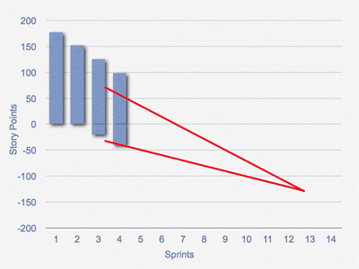

| Example: Alternative Release Burndown Chart |
|
|
| Related Elements |
|---|
| Main Description | The typical Scrum Release Burndown Chartshows a single value--the net change in the amount of work remaining. In some cases the simplicity of this is wonderful. However, it can also mask what may be going on in a project. For example, suppose a team had expected to make progress of 40 (hours, points, whatever) last sprint but the burndown chart only shows net progress of 10. Was the team slower than expected or was more work added to the release? It's important to know the answer to this question because we cannot really predict when the release will be done without it. With this in mind, I've introduced the following type of burndown chart:
On this burndown chart, the height of each bar represents the amount of work remaining in the release. I prefer to estimate Product Backlog, items in "story points" so this figure shows a release with 175 story points planned in it as of sprint 1. The team finished 25 points in sprint 1, leaving 150 to go as of the start of sprint 2. There were 120 as of the start of sprint 3. So, the top of the bar is reduced by the amount of work the team finishes in a given sprint. Before the start of sprint 4, the Product Owner added work to the project. This additional work is shown at the bottom of the bar for the fourth sprint. You can see that the vertical height of sprint 4 goes from about -40 to about 95, or 135 points of work remaining. Fourty of those 135 points are from new work. Prior to the start of sprint 6 work was removed by the Product Owner. As with an increase in scope, a decrease in scope comes off the bottom. This is true whether the work removed is work that was initially planned or work that was added during the project. One way to predict how many sprints a project will take is to draw a trend line through the bars and extend the baseline. For example:
A problem with this is that predicting the end date as above does not include the rate of change to the scope of the project. You can anticipate the number of sprints needed by also drawing a trend line through the changes occurring at the bottom of the bars as shown below:  |
|---|


This program and the accompanying materials are made available under the
Copyright © 1998--2008 Mountain Goat Software. All rights reserved. |